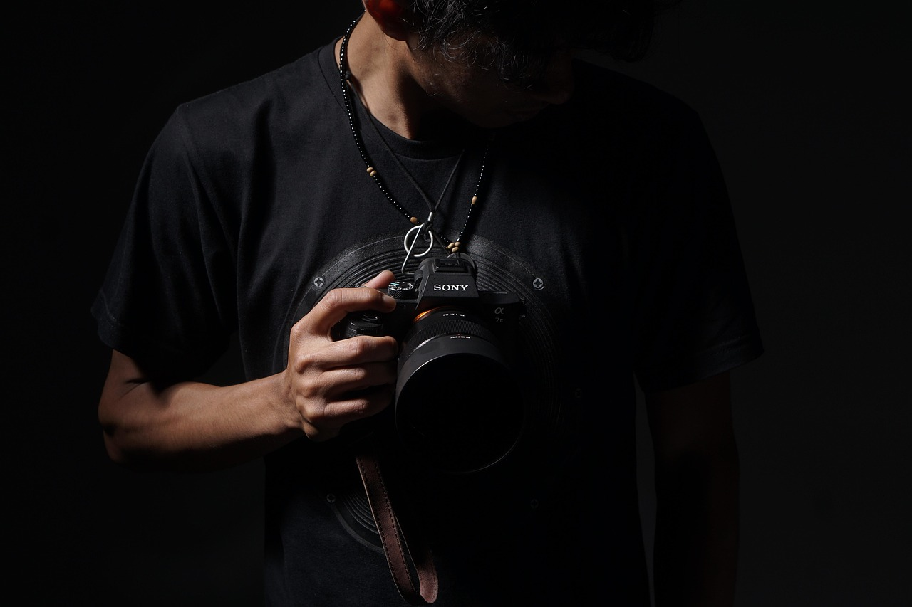

Evolution av input inom HCI
Detta är en resa genom form, funktion och tid.
Från hålkorten som användes för in- och utmatning av data i datorer
till nutida Apple Vision Pro
med fler att komma...
No Interaction Era (≈ 1940–1960)
Du interagerar inte med datorn utan datorn är en maskin du förbereder instruktioner för
Command Era (≈ 1960–1980)
Du berättar om för datorn vad den ska utföra via tangentbord
GUI Era (≈ 1980–2007)
Datorn blir visuell och tillgänglig med hjälp av IBM PC, datormus och tangentbord


Touch Era (≈ 2007–2015)
Gränssnittet känns verkligt och fysiskt. Interaktion sker via fingrar på skärmen och multi-touch
Natural / Multimodal Era (≈ 2015–nu)
Interaktion blir naturlig och osynlig via flera input samtidigt: röst, gest, blick.


